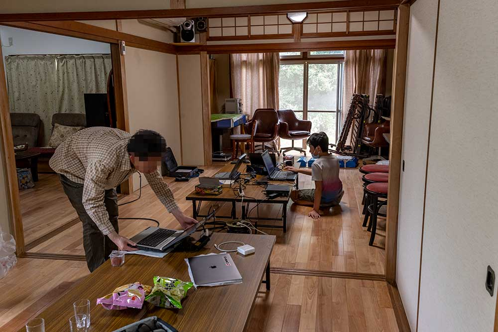
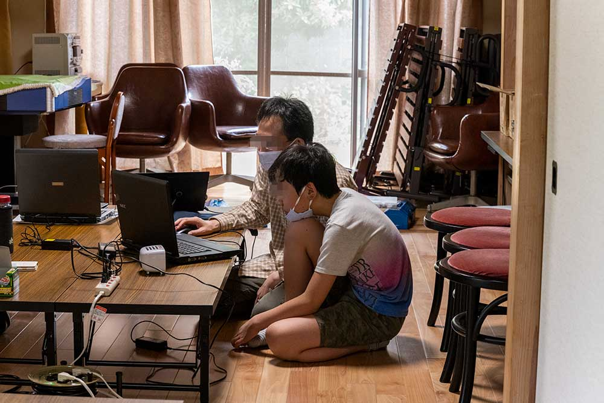
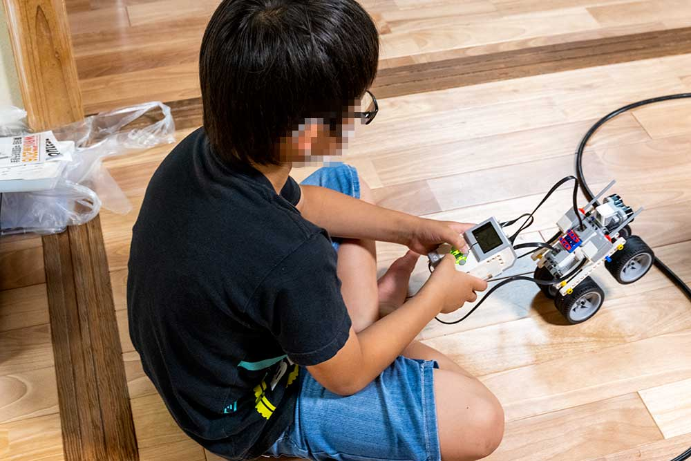

コロナさんの影響が危惧される中、CoderDojo松山を、会場非公開限定で開催いたしました。
会場非公開で開催し、参加したNINJAは2名+お客様でしたが、スペースに余裕もっての開催となります。フェイスシールドも準備していましたが、窓も全開で心地よい風が吹き抜けていましたので、自己責任での運用です。


初参加のNINJAは、話を聞いてみると 「MINSDSTORMがやりたい！」 ということでしたので、急遽手持ちのEV3を準備しました。
ただ、準備不足で、準備していたx230になんと！
「Bluetoothのモジュールが入ってなかった！」 ※写真赤枠のところ、ショック！

ことが分かり、MAC＋Scrachの準備しましたが、とりあえず今回は組み立てに慣れることがメインとなりました。

割と安くAliexpressに転がっていたので発注しました。早ければ次回のCoderDojo松山にて、x230に装着し渡せそうです。